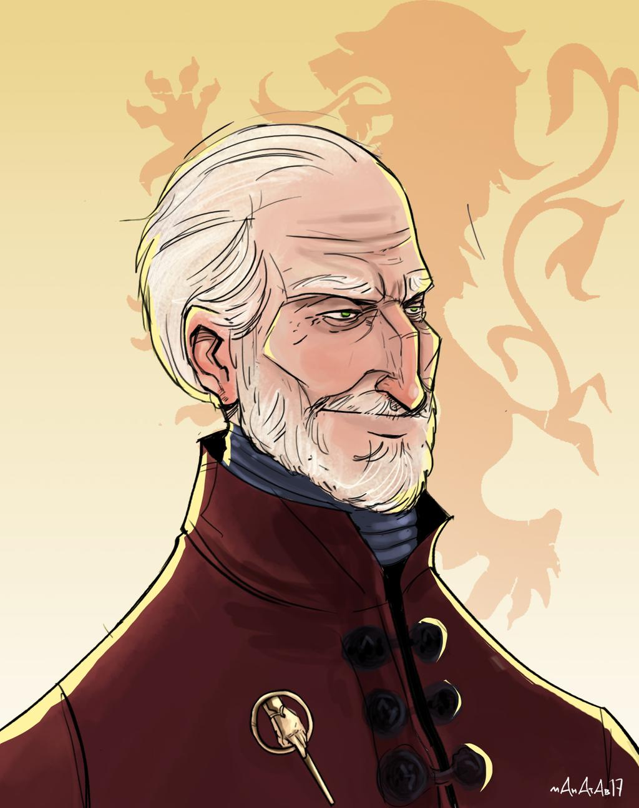

Tywin Lannister
Warden of the West
} Battle Commander for Hire {
SKILLS
I am Lord of Casterly Rock, Shield of Lannisport, and Warden of the West. I am a proven Battle Commander
who will assure your company of nothing but success.
WORK HISTORY
- 260 AC: Knighted during the War of the Ninepenny Kings
- 261 AC: Destruction of House Reyne by drowning at Castemere - ending the Reyne-Tarbeck revolt
- 263 AC: Elevated to Hand of the King
- 277 AC: Brought down the Defiance of Duskendale
- 282 AC: Provided a host of 10,000 soldiers to Robert Baratheon during the Sack of King's Landing
- Various war-crimes and atrocities too gruesome to share with the public
CONTACT
Lord Tywin Lannister
Casterly Rock
Westerlands, Westeros
Casterly Rock
Westerlands, Westeros